BALANCED
EXTERNAL_VACUUM / EXTERNAL_ARMOR_OCCLUSION: COMPLETE, contacts 16, blocked 12, unresolved 0
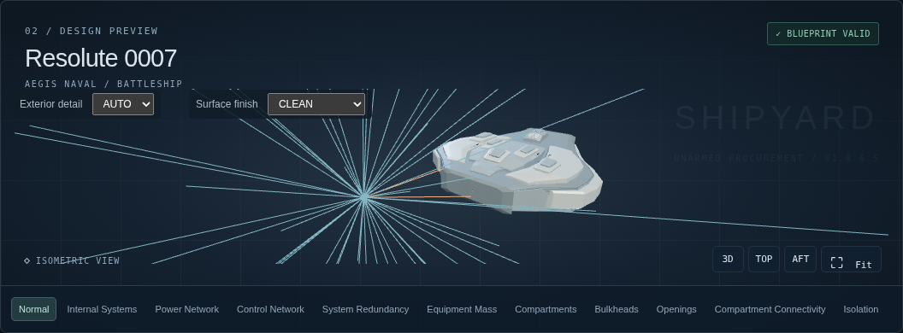
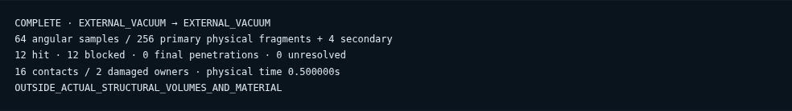
Preserved Normal pixels

These are actual Chromium screenshots, not generated concepts. LOW64 angular directions /256 physical carriers; HIGH is the final default after sensitivity QA. Manual internal bursts do not demonstrate exterior missile penetration. Read REPORT.md for unresolved paths and UI latency.
Detailed QA reportEXTERNAL_VACUUM / EXTERNAL_ARMOR_OCCLUSION: COMPLETE, contacts 16, blocked 12, unresolved 0


INTERNAL_COMPARTMENT / ACTUAL_BULKHEAD_AND_APERTURE: PARTIAL, contacts 1212, blocked 120, unresolved 12
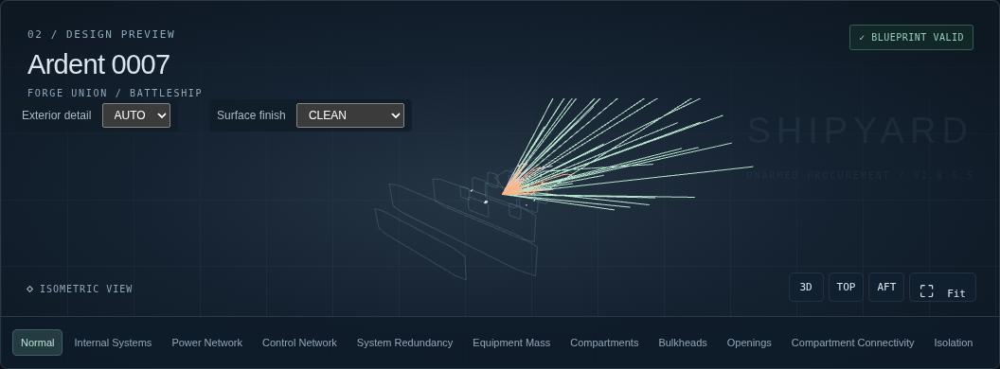
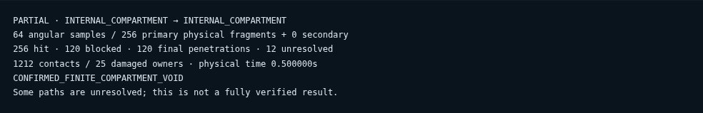

EXTERNAL_VACUUM / ACTUAL_SPINE_UNRESOLVED: PARTIAL, contacts 256, blocked 0, unresolved 256
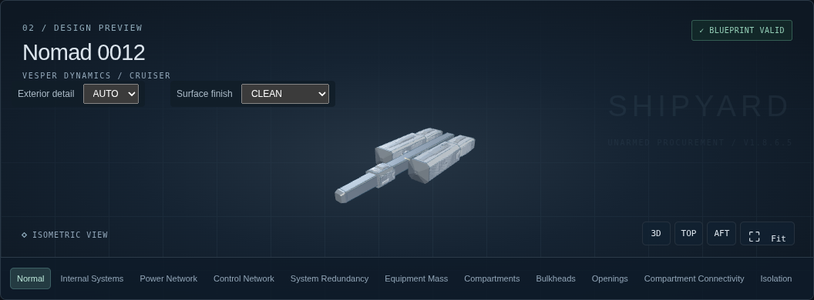
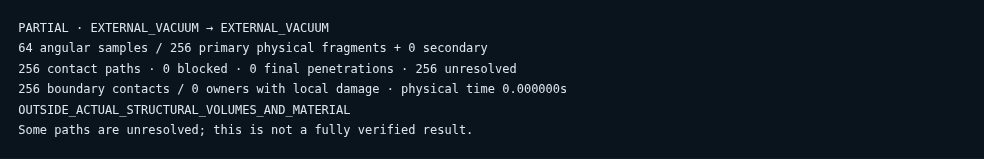

EXTERNAL_VACUUM / ACTUAL_EXPOSED_TRUSS: COMPLETE, contacts 256, blocked 256, unresolved 0
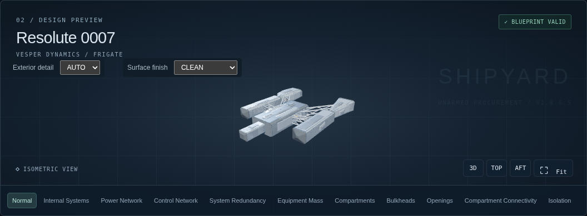

EXTERNAL_VACUUM / ONE_REAL_TWIN_HULL: PARTIAL, contacts 944, blocked 16, unresolved 24
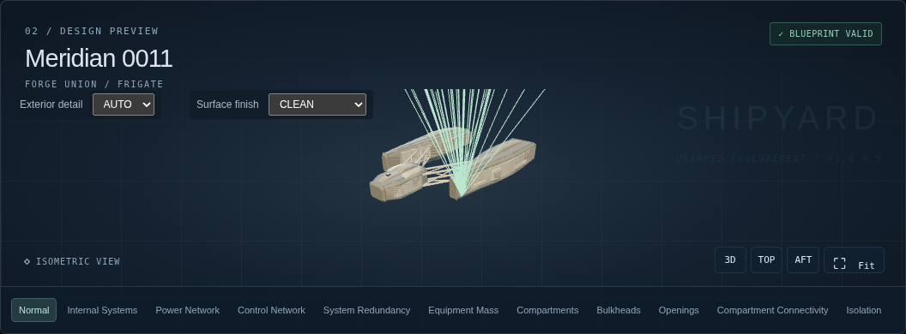
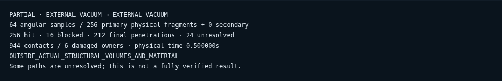

EXTERNAL_VACUUM / ACTUAL_SOLID_CONNECTOR: COMPLETE, contacts 256, blocked 256, unresolved 0
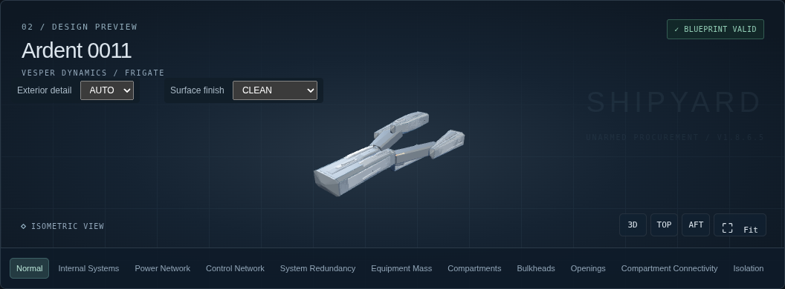


INTERNAL_COMPARTMENT / ACTUAL_BULKHEAD_AND_APERTURE: COMPLETE, contacts 1028, blocked 64, unresolved 0
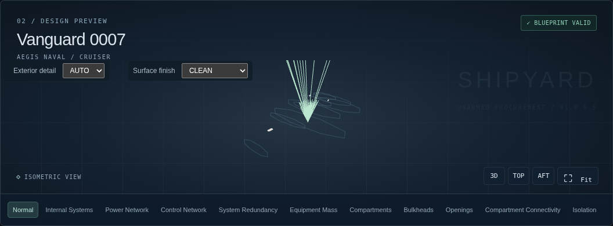
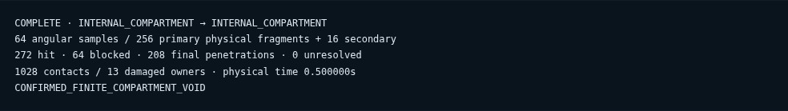

INTERNAL_COMPARTMENT / MANUAL_INTERNAL_MULTIPLE_PATHS: PARTIAL, contacts 884, blocked 188, unresolved 4
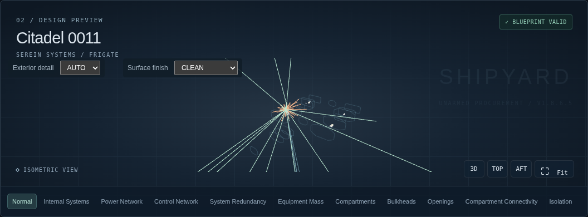

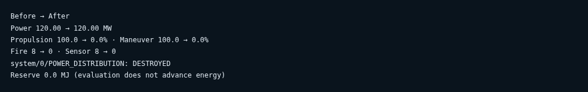
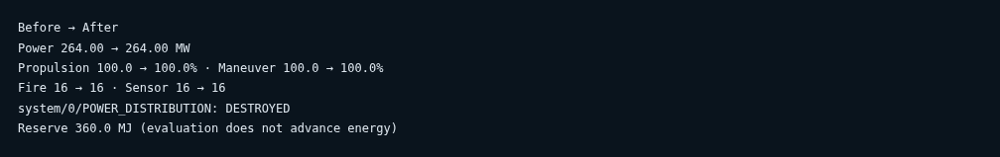
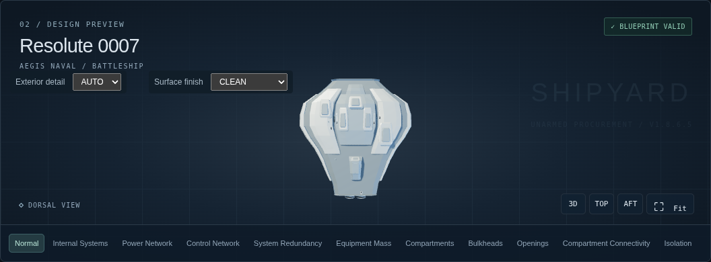
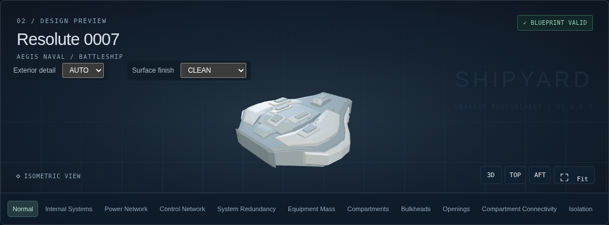
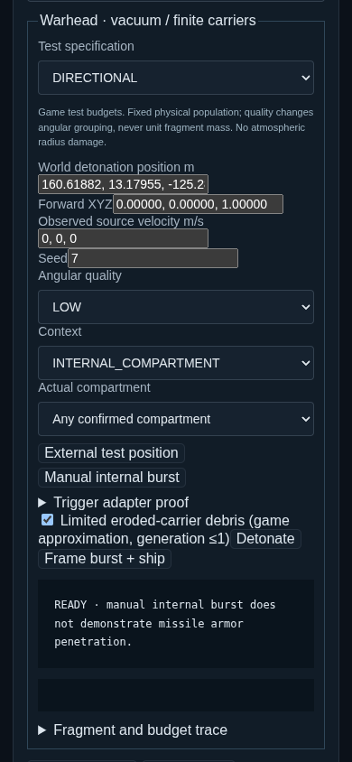
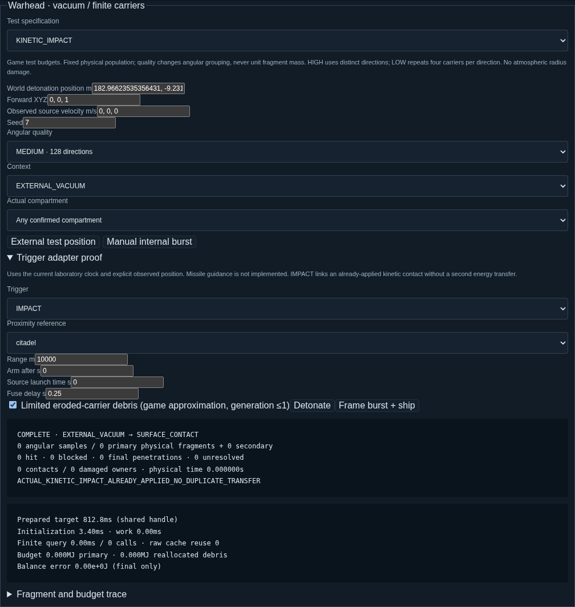